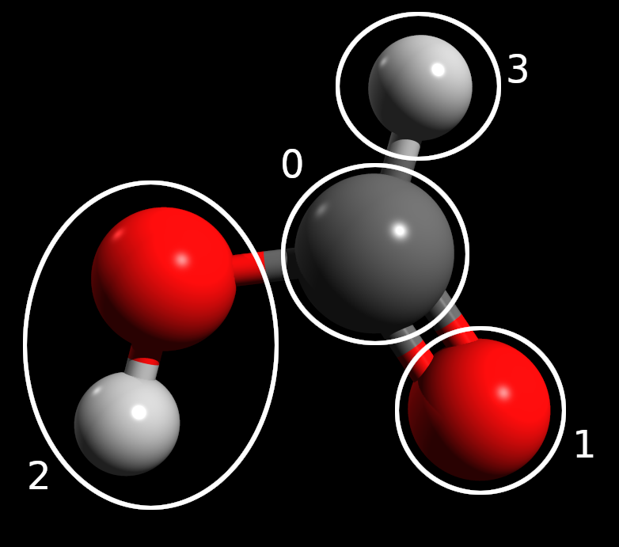

Tackling larger systems with fragmentation¶
In the basic VQE and extended VQE tutorials, we covered how to run a simple VQE calculation using InQuanto and some optimizations that can be performed. Here, we look at using Density Matrix Embedding Theory (DMET) to examine a larger system by fragmenting it. As an example, we consider HCOOH (formic acid). Without considering symmetry or active space reductions, this system would require 34 qubits to simulate using an STO-3G basis. This requires more resources than are available on current quantum computers, and will be extremely expensive to simulate on a classical device.
DMET is a method of studying large molecules by partitioning the system into fragments containing a smaller number of atoms. Each fragment is treated independently in a bath corresponding to the molecular environment. Crucially, DMET allows for different fragments to be treated using different electronic structure methods. For example, we could imagine using VQE on the quantum computer to treat one particular fragment of interest. We focus here on a simplified implementation of DMET – the so-called one-shot DMET. More examples are in the examples/embeddings folder. For discussion of the theory underpinning DMET, see Knizia & Chan (2012). As DMET relies heavily on performing classical electronic structure calculations in addition to any quantum computations, we need to import a driver and the fragment solvers from the inquanto-pyscf extension.
from inquanto.geometries import GeometryMolecular
from inquanto.embeddings import DMETRHF
from inquanto.extensions.pyscf import ChemistryDriverPySCFMolecularRHF
from inquanto.extensions.pyscf import DMETRHFFragmentPySCFCCSD, get_fragment_orbital_masks, get_fragment_orbitals
from pytket.extensions.qiskit import AerStateBackend
~/lib/python3.11/site-packages/pyscf/dft/libxc.py:771: UserWarning: Since PySCF-2.3, B3LYP (and B3P86) are changed to the VWN-RPA variant, corresponding to the original definition by Stephens et al. (issue 1480) and the same as the B3LYP functional in Gaussian. To restore the VWN5 definition, you can put the setting "B3LYP_WITH_VWN5 = True" in pyscf_conf.py
warnings.warn('Since PySCF-2.3, B3LYP (and B3P86) are changed to the VWN-RPA variant, '
In order to use DMET to study our system, we must choose a scheme to split the molecule into fragments. In general, this is a task which requires chemical intuition and an awareness of the resource implications of the size of each fragment. As our goal here is to perform a simulation that runs quickly (and not to obtain highly accurate results), we choose a very fine fragmentation scheme with several small fragments.

The above figure shows the fragmentation scheme graphically. We see that other than the hydroxyl, each atom is in its own fragment. This ensures that the maximum number of qubits required to simulate an individual fragment would be 12 (the hydroxyl fragment), a reasonable number of qubits to simulate on a large classical computer.
# ################# #
# MOLECULE & DRIVER #
# ################# #
xyz = [['C', [0.000, 0.442, 0.000]],
['O', [-1.046, -0.467, 0.000]],
['O', [1.171, 0.120, 0.000]],
['H', [-0.389, 1.475, 0.000]],
['H', [-0.609, -1.355, 0.000]]]
geometry = GeometryMolecular(xyz)
basis = 'sto-3g'
charge = 0
driver = ChemistryDriverPySCFMolecularRHF(basis='sto-3g',
geometry=geometry,
charge=0,
verbose=0)
hamiltonian_operator, space, rdm1 = driver.get_lowdin_system()
dmet = DMETRHF(hamiltonian_operator, rdm1)
As before, we first initialise the driver. The initialization of the driver is much the same as in standard VQE with regards to the molecule geometry, basis and charge specification. However, because of the spatial fragmentation, DMET requires the localisation of the molecular orbitals. Therefore, when we compute the Hamiltonian operator, instead of get_system() we call the get_lowdin_system() method. This will perform an RHF simulation of the molecule, and will return the mean-field 1e-RDM as rdm1, the space and the hamiltonian_operator in the Löwdin basis, that is computed by Löwdin symmetric orthogonalization of the atomic orbitals.
Finally, we initialize the DMET method with the hamiltonian_operator and the rdm1.
At this stage, we have not specified any particular fragmentation scheme. Fragments in InQuanto are associated with the level of electronic structure theory that will be used to simulate them. As a first test, we try specifying that each fragment should be treated with classical CCSD.
In order to specify a fragment, we need to determine the corresponding Löwdin orbitals. The easiest way to specify the fragments is by atoms. Based on the indices in the xyz table, we can make four sets of atom indices, and using the get_fragment_orbitals() utility function we can tabulate the orbitals and the four orbital fragment masks that select the Löwdin orbitals corresponding to the fragments:
get_fragment_orbitals(driver, [0], [2], [1, 4], [3])
| 0 | 1 | 2 | 3 | 4 | |
|---|---|---|---|---|---|
| 0 | 0 C 1s | True | False | False | False |
| 1 | 0 C 2s | True | False | False | False |
| 2 | 0 C 2px | True | False | False | False |
| 3 | 0 C 2py | True | False | False | False |
| 4 | 0 C 2pz | True | False | False | False |
| 5 | 1 O 1s | False | False | True | False |
| 6 | 1 O 2s | False | False | True | False |
| 7 | 1 O 2px | False | False | True | False |
| 8 | 1 O 2py | False | False | True | False |
| 9 | 1 O 2pz | False | False | True | False |
| 10 | 2 O 1s | False | True | False | False |
| 11 | 2 O 2s | False | True | False | False |
| 12 | 2 O 2px | False | True | False | False |
| 13 | 2 O 2py | False | True | False | False |
| 14 | 2 O 2pz | False | True | False | False |
| 15 | 3 H 1s | False | False | False | True |
| 16 | 4 H 1s | False | False | True | False |
With another utility function get_fragment_orbital_masks(...) we can obtain the orbital fragment masks as arrays. Once we have the orbital masks we can complete the DMET simulation.
maskC, maskO, maskOH, maskH = get_fragment_orbital_masks(driver, [0], [2], [1, 4], [3])
fragments = [DMETRHFFragmentPySCFCCSD(dmet, maskC, name="C")]
fragments += [DMETRHFFragmentPySCFCCSD(dmet, maskO, name="O")]
fragments += [DMETRHFFragmentPySCFCCSD(dmet, maskOH, name="OH")]
fragments += [DMETRHFFragmentPySCFCCSD(dmet, maskH, name="H")]
result = dmet.run(fragments)
# STARTING CHEMICAL POTENTIAL 0.0
# STARTING CORR POTENTIAL PARAMETERS []
# FULL SCF ITERATION 0
# NEWTON ITERATION - CHEMICAL POTENTIAL 0.0
# FRAGMENT 0 - C: <H>=-186.31338432615368 EFR=-58.83801802368312 Q=0.020105631085688636
# FRAGMENT 1 - O: <H>=-186.31338532077353 EFR=-94.07923540836005 Q=-0.08915722472857546
# FRAGMENT 2 - OH: <H>=-186.29269508290201 EFR=-98.21603860323467 Q=-0.07076155306003251
# FRAGMENT 3 - H: <H>=-186.23216575139472 EFR=-3.8054069201359595 Q=0.002986786186124024
# NEWTON ITERATION - CHEMICAL POTENTIAL 0.0001
# FRAGMENT 0 - C: <H>=-186.31396619851338 EFR=-58.83898988857606 Q=0.020314471024403424
# FRAGMENT 1 - O: <H>=-186.31419656704082 EFR=-94.0797095185983 Q=-0.08903855658752668
# FRAGMENT 2 - OH: <H>=-186.29359289137557 EFR=-98.21647309737236 Q=-0.07064482022362562
# FRAGMENT 3 - H: <H>=-186.23226272837812 EFR=-3.805683950277535 Q=0.003066335733261094
# NEWTON ITERATION - CHEMICAL POTENTIAL 0.02612234664464692
# FRAGMENT 0 - C: <H>=-186.4660997003911 EFR=-59.09129439130406 Q=0.07462903595820602
# FRAGMENT 1 - O: <H>=-186.52571212206996 EFR=-94.20327799731078 Q=-0.05804063711884311
# FRAGMENT 2 - OH: <H>=-186.52760819713768 EFR=-98.32803927524827 Q=-0.04067365994348471
# FRAGMENT 3 - H: <H>=-186.25776880475564 EFR=-3.8776501906423517 Q=0.023767280256090095
# NEWTON ITERATION - CHEMICAL POTENTIAL 0.02618319569991223
# FRAGMENT 0 - C: <H>=-186.46645711276085 EFR=-59.091882980913326 Q=0.07475597327765104
# FRAGMENT 1 - O: <H>=-186.5262076771364 EFR=-94.203567426381 Q=-0.05796786917953156
# FRAGMENT 2 - OH: <H>=-186.52815629411148 EFR=-98.3282967036768 Q=-0.04060450873466159
# FRAGMENT 3 - H: <H>=-186.25782907787817 EFR=-3.877818167978842 Q=0.023815682210136968
# CHEMICAL POTENTIAL 0.02618333425876916
# FINAL PARAMETERS: []
# FINAL CHEMICAL POTENTIAL: 0.02618333425876916
# FINAL ENERGY: -186.53116138512055
In the first block, we have specified our fragments as a list. We use the inquanto.extensions.pyscf.DMETRHFFragmentPySCFCCSD class as we want to look at each fragment using classical coupled cluster. Each fragment takes the dmet as an argument in addition to an arbitrary string giving the fragment name. It also requires the masks for the orbitals within the fragment to be specified. These are given as an array of booleans, marking the index of orbitals with True if it is in the fragment and False if it is outside it.
The dmet.run() method is then invoked passing the fragments as a list. During the execution we can observe details about the calculation. The FINAL ENERGY line in the end gives us the final ground state energy of the system calculated by DMET.
print("REFERENCE MP2 ENERGY: ", driver.run_mp2())
print("REFERENCE CCSD ENERGY: ", driver.run_ccsd())
REFERENCE MP2 ENERGY: -186.37687192609545
REFERENCE CCSD ENERGY: -186.40300888507934
As a reference we computed MP2 and CCSD energies. We can see that in this instance DMET obtains about 0.13 Ha more correlation energy than non-DMET classical CCSD. Although defeating the point of fragmenting the system to reduce resource requirements, benchmarking a DMET calculation with the same level of theory for each fragment against a non-DMET calculation is a good way to estimate the error incurred with the fragmentation scheme. Note that DMET is non-variational and thus can yield energies lower than the exact (i.e. FCI-level) energy.
DMET allows the use of different levels of theory for each fragment. By using the examples, we encourage the reader to modify this notebook such that some of the fragments (for example the lone hydrogen atom) are using the VQE method with a state vector simulator.